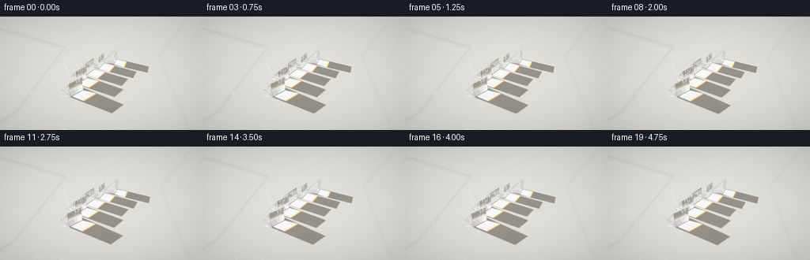
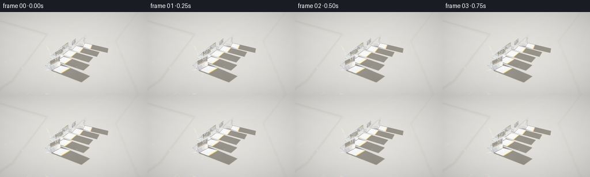

CODING AGENTS AS PIXEL WORLD MODELS
traex/GPT-6.1-Sol · phygen_080
点击播放 · 原生 RGB 像素
逐轮保存的候选
回放视频、检查图与代码变化。
每份候选均可单独播放。实际图片检查记录在下方工具轨迹中。
候选 01播放与检查图
点击播放 · 原生 RGB 像素


展开代码变化
--- 上一保存版本
+++ 本次保存版本
@@ -0,0 +1,287 @@
+"""A self-contained numpy optical renderer: sunlight, dispersive glass, and caustics."""
+from pathlib import Path
+import numpy as np
+from scipy.ndimage import gaussian_filter, map_coordinates
+from PIL import Image
+import artifact_io
+
+ROOT = Path(__file__).resolve().parent
+DT = np.float32
+
+def unit(v):
+ a=np.asarray(v,dtype=DT)
+ return a/np.maximum(np.linalg.norm(a,axis=-1,keepdims=True),1e-12)
+
+SUN = unit([.94,.065,-.335])
+LIGHT = -SUN
+# The five cut optical-glass bars follow an evenly spaced, gently fanned arc.
+OBJECTS=[]
+for j,y in enumerate([-3.10,-1.55,0.,1.55,3.10]):
+ x=-1.28+.105*y*y
+ ang=.080*y
+ co,si=np.cos(ang),np.sin(ang)
+ rotation=np.array([[co,-si,0],[si,co,0],[0,0,1]],dtype=DT)
+ width=1.28; height=1.27; length=1.30
+ n=unit([[0,0,-1],[1,0,0],[-height,0,width],[0,-1,0],[0,1,0]])
+ d=np.array([0,width/2,height*width/2/np.sqrt(width*width+height*height),length/2,length/2],dtype=DT)
+ ns=list(n); ds=list(d)
+ # Small genuine planar bevels catch the window light at the polished edges.
+ for a,b in [(0,1),(0,2),(1,2)]+[(a,b) for a in range(3) for b in (3,4)]:
+ summed=n[a]+n[b]; scale=np.linalg.norm(summed)
+ ns.append(summed/scale); ds.append((d[a]+d[b])/scale-.017)
+ normals=np.asarray(ns,dtype=DT)@rotation.T
+ center=np.array([x,y,.026],dtype=DT)
+ bounds=np.asarray(ds,dtype=DT)+normals@center
+ OBJECTS.append((normals,bounds))
+
+
+def intersect(o,v,table=True):
+ count=len(o)
+ best=np.full(count,np.inf,dtype=DT)
+ ident=np.full(count,-1,np.int16)
+ norm=np.zeros((count,3),dtype=DT)
+ for k,(ns,ds) in enumerate(OBJECTS):
+ den=v@ns.T
+ numer=ds-o@ns.T
+ ts=numer/np.where(np.abs(den)>1e-9,den,1e-9)
+ near=np.where(den < -1e-8,ts,-np.inf)
+ far=np.where(den > 1e-8,ts,np.inf)
+ ine=np.argmax(near,axis=1); oute=np.argmin(far,axis=1)
+ t0=np.max(near,axis=1); t1=np.min(far,axis=1)
+ inside=t0<.00015
+ t=np.where(inside,t1,t0)
+ badparallel=np.any((np.abs(den)<1e-8)&(numer<0),axis=1)
+ ok=(t1>=t0)&(t>.00015)&(t<best)&~badparallel
+ ids=np.flatnonzero(ok)
+ best[ids]=t[ids]; ident[ids]=k
+ faces=np.where(inside,oute,ine)
+ norm[ids]=ns[faces[ids]]
+ if table:
+ tf=-o[:,2]/np.where(np.abs(v[:,2])>1e-10,v[:,2],1e-10)
+ ok=(v[:,2]<0)&(tf>.00015)&(tf<best)
+ best[ok]=tf[ok]; ident[ok]=5; norm[ok]=[0,0,1]
+ return best,ident,norm
+
+
+def bend(v,n,index):
+ entering=np.sum(v*n,axis=1)<0
+ facing=np.where(entering[:,None],n,-n)
+ ratio=np.where(entering,1/index,index).astype(DT)
+ cos=-np.sum(v*facing,axis=1)
+ cos=np.clip(cos,0,1)
+ k=1-ratio*ratio*(1-cos*cos)
+ tir=k<0
+ transmitted=ratio[:,None]*v+(ratio*cos-np.sqrt(np.maximum(k,0)))[:,None]*facing
+ reflected=v+2*cos[:,None]*facing
+ # Exact unpolarized dielectric Fresnel reflection.
+ ct=np.sqrt(np.maximum(k,0))
+ rs=((ratio*cos-ct)/(ratio*cos+ct+1e-9))**2
+ rp=((ratio*ct-cos)/(ratio*ct+cos+1e-9))**2
+ fresnel=np.where(tir,1,(rs+rp)/2)
+ return unit(transmitted),unit(reflected),fresnel,tir,entering
+
+XMIN,XMAX=-7.,10.
+YMIN,YMAX=-7.,7.
+TW,TH=1050,865
+DX=(XMAX-XMIN)/TW; DY=(YMAX-YMIN)/TH
+FLOOR=None
+
+def spectral_rgb(w):
+ if w<440: c=[-(w-440)/60,0,1]
+ elif w<490:c=[0,(w-440)/50,1]
+ elif w<510:c=[0,1,-(w-510)/20]
+ elif w<580:c=[(w-510)/70,1,0]
+ elif w<645:c=[1,-(w-645)/65,0]
+ else:c=[1,0,0]
+ strength=.4+.6*(w-400)/30 if w<430 else (.4+.6*(700-w)/40 if w>660 else 1)
+ return np.array(c,dtype=DT)*strength
+
+
+def bake_floor():
+ global FLOOR
+ print('Baking sunlight shadows and spectral photon caustics...',flush=True)
+ xs=XMIN+(np.arange(TW)+.5)*DX
+ ys=YMIN+(np.arange(TH)+.5)*DY
+ xx,yy=np.meshgrid(xs,ys)
+ # Parallel sunlight visibility, softened by the finite solar disk.
+ shadow=np.empty((TH,TW),DT)
+ for start in range(0,TH,70):
+ end=min(start+70,TH)
+ pts=np.column_stack([xx[start:end].ravel(),yy[start:end].ravel(),np.full((end-start)*TW,.001)])
+ v=np.broadcast_to(LIGHT,pts.shape)
+ _,hit,_=intersect(pts,v,False)
+ shadow[start:end]=(hit<0).reshape(end-start,TW)
+ shadow=gaussian_filter(shadow,1.6)
+ # Photon launch points are indexed by where an unobstructed ray hits the table.
+ nx,ny=620,650
+ px=np.linspace(-3.2,5.8,nx,endpoint=False)+9/nx/2
+ py=np.linspace(-4.4,4.4,ny,endpoint=False)+8.8/ny/2
+ gx,gy=np.meshgrid(px,py)
+ floorpoints=np.column_stack([gx.ravel(),gy.ravel(),np.zeros(gx.size)]).astype(DT)
+ origins=floorpoints-SUN*(4.3/-SUN[2])
+ dirs=np.broadcast_to(SUN,origins.shape).copy()
+ ts,hit,ns=intersect(origins,dirs)
+ selected=(hit>=0)&(hit<5)
+ initial_o=origins[selected]; initial_v=dirs[selected]
+ lambdas=np.linspace(405,695,19)
+ colors=np.array([spectral_rgb(w) for w in lambdas])
+ colors/=colors.sum(axis=0,keepdims=True)
+ irradiance=np.zeros((TH*TW,3),DT)
+ photonarea=(9/nx)*(8.8/ny)
+ for wave,color in zip(lambdas,colors):
+ # Dense flint glass: a strong but continuous, physically plausible dispersion.
+ index=1.505+.081*((695-wave)/290)**1.65
+ o=initial_o.copy(); v=initial_v.copy(); energy=np.ones(len(o),DT)
+ for depth in range(13):
+ if len(o)==0:break
+ t,h,n=intersect(o,v)
+ good=h>=0
+ o=o[good];v=v[good];t=t[good];h=h[good];n=n[good];energy=energy[good]
+ p=o+t[:,None]*v
+ landed=h==5
+ if np.any(landed):
+ pp=p[landed]; ew=energy[landed]
+ ix=np.floor((pp[:,0]-XMIN)/DX).astype(int)
+ iy=np.floor((pp[:,1]-YMIN)/DY).astype(int)
+ valid=(ix>=0)&(ix<TW)&(iy>=0)&(iy<TH)
+ flat=iy[valid]*TW+ix[valid]
+ density=np.bincount(flat,weights=ew[valid],minlength=TH*TW).astype(DT)
+ irradiance+=density[:,None]*color[None,:]*(photonarea/(DX*DY))
+ keep=~landed
+ p=p[keep];v=v[keep];n=n[keep];energy=energy[keep]
+ trans,refl,fresnel,tir,_=bend(v,n,index)
+ v=np.where(tir[:,None],refl,trans)
+ energy*=np.where(tir,1,1-fresnel)
+ energy*=.995
+ o=p+v*.0004
+ print(' wavelength %.0f nm'%wave,flush=True)
+ irradiance=irradiance.reshape(TH,TW,3)
+ irradiance=gaussian_filter(irradiance,(1.25,1.25,0))
+ # Fine, subdued mineral texture in an ivory stone display surface.
+ rng=np.random.default_rng(14)
+ fine=gaussian_filter(rng.normal(size=(TH,TW)).astype(DT),.75)
+ broad=gaussian_filter(rng.normal(size=(TH,TW)).astype(DT),22)
+ broad/=np.std(broad)
+ tex=1+fine*.016+broad*.011
+ # Gentle soft window mullion shadows far beyond the arrangement.
+ stripe1=np.exp(-((xx+.49*yy+5.4)/.20)**2)*.20
+ stripe2=np.exp(-((xx+.49*yy-7.4)/.17)**2)*.12
+ windowshade=1-stripe1-stripe2
+ diffuse=np.array([.78,.735,.645],DT)
+ illumination=(.24+.76*shadow)*windowshade
+ FLOOR=diffuse[None,None,:]*(illumination[:,:,None]+irradiance*1.14)*tex[:,:,None]
+ np.savez_compressed(ROOT/'.tmp'/'optics.npz',floor=FLOOR)
+ print('Caustic maximum',irradiance.max(),flush=True)
+
+
+def floor_color(p):
+ coords=np.array([(p[:,1]-YMIN)/DY-.5,(p[:,0]-XMIN)/DX-.5])
+ result=np.stack([map_coordinates(FLOOR[:,:,c],coords,order=1,mode='nearest') for c in range(3)],axis=1)
+ return result
+
+
+def environment(v):
+ z=v[:,2]
+ brightness=.40+.24*np.clip(z,0,1)
+ c=brightness[:,None]*np.array([.93,.98,1.05],DT)
+ # A large sunlit window reflected on the polished facets; tiny mullions.
+ window_normal=unit([-1,-.34,.12])
+ right=unit(np.cross([0,0,1],window_normal)); up=unit(np.cross(window_normal,right))
+ denom=v@window_normal
+ u=(v@right)/np.maximum(denom,1e-4)
+ w=(v@up)/np.maximum(denom,1e-4)
+ pane=(denom>0)&(np.abs(u)<.60)&(w>-.1)&(w<1.55)
+ borders=np.minimum(.60-np.abs(u),np.minimum(w+.1,1.55-w))
+ softness=np.clip(borders/.045,0,1)
+ bars=(1-.70*np.exp(-(u/.018)**2))*(1-.6*np.exp(-((w-.64)/.025)**2))
+ c+=pane[:,None]*softness[:,None]*bars[:,None]*np.array([2.9,2.7,2.3],DT)
+ sunangle=np.maximum(0,v@LIGHT)
+ sun=np.exp((sunangle-1)/.00011)
+ c+=sun[:,None]*np.array([28,24,17],DT)
+ # Warm floor reflected at grazing angles is essential to clear glass.
+ below=z<0
+ c[below]=np.array([.57,.52,.43],DT)*(1+.12*z[below,None])
+ return c
+
+
+def trace(o,v):
+ count=len(o); output=np.zeros((count,3),DT)
+ active=[(o,v,np.ones((count,3),DT),np.arange(count),0)]
+ while active:
+ o,v,weight,pixel,depth=active.pop()
+ t,h,n=intersect(o,v)
+ miss=h<0
+ if np.any(miss): output[pixel[miss]]+=weight[miss]*environment(v[miss])
+ floor=h==5
+ if np.any(floor):
+ p=o[floor]+v[floor]*t[floor,None]
+ fc=floor_color(p)
+ # A restrained polished-stone reflection below the glass.
+ grazing=(1-np.abs(v[floor,2]))**5
+ reflected=v[floor].copy(); reflected[:,2]*=-1
+ fc=fc*(1-.08*grazing[:,None])+.045*grazing[:,None]*environment(reflected)
+ output[pixel[floor]]+=weight[floor]*fc
+ glass=(h>=0)&(h<5)
+ if not np.any(glass):continue
+ og=o[glass];vg=v[glass];wg=weight[glass];pg=pixel[glass]
+ ng=n[glass];tg=t[glass]
+ p=og+tg[:,None]*vg
+ tr,rf,fr,tir,entering=bend(vg,ng,1.544)
+ # Tiny absorption over interior paths, not an opaque surface tint.
+ inside=~entering
+ wg[inside]*=np.exp(-tg[inside,None]*np.array([.018,.008,.005],DT))
+ if depth>=10:
+ output[pg]+=wg*environment(tr)
+ continue
+ wt=wg*(1-fr[:,None])
+ wr=wg*fr[:,None]
+ kt=(np.max(wt,axis=1)>.005)&~tir
+ kr=np.max(wr,axis=1)>.007
+ if np.any(kt):active.append((p[kt]+tr[kt]*.0005,tr[kt],wt[kt],pg[kt],depth+1))
+ if np.any(kr):active.append((p[kr]+rf[kr]*.0005,rf[kr],wr[kr],pg[kr],depth+1))
+ return output
+
+
+def tonemap(x):
+ # Filmic highlight rolloff retains luminous white faces and colored caustics.
+ x=np.maximum(x,0)*1.12
+ x=(x*(2.51*x+.03))/(x*(2.43*x+.59)+.14)
+ return np.clip(x,0,1)**(1/2.2)
+
+
+def main():
+ global FLOOR
+ (ROOT/'.tmp').mkdir(exist_ok=True)
+ bake_floor()
+ W,H=512,288
+ yy,xx=np.mgrid[0:H,0:W]
+ sx=((xx+.5)/W-.5)*2*(W/H)
+ sy=(.5-(yy+.5)/H)*2
+ frames=[]
+ for frame in range(20):
+ t=frame/19
+ # An unhurried product-shot camera drift; the prism arrangement stays fixed.
+ angle=-.017+.034*t
+ base=np.array([7.7,-10.8,8.4],DT)
+ eye=np.array([base[0]*np.cos(angle)-base[1]*np.sin(angle),base[0]*np.sin(angle)+base[1]*np.cos(angle),base[2]],DT)
+ target=np.array([.60,0,.30],DT)
+ eye=target+(eye-target)*(1-.030*t)
+ fwd=unit(target-eye); right=unit(np.cross(fwd,[0,0,1]));up=unit(np.cross(right,fwd))
+ fov=.345
+ v=unit(fwd+sx[:,:,None]*fov*right+sy[:,:,None]*fov*up).reshape(-1,3)
+ o=np.broadcast_to(eye,v.shape).copy()
+ color=trace(o,v).reshape(H,W,3)
+ # Extremely subtle photographic glow is confined to bright crystal glints.
+ glow=gaussian_filter(np.maximum(color-1.55,0),(1.7,1.7,0))
+ color+=glow*.055
+ image=tonemap(color)
+ vignette=1-.08*((sx/(W/H))**2+sy**2)
+ image*=vignette[:,:,None]
+ rgb=np.uint8(np.clip(image*255+.5,0,255))
+ rgb=np.array(Image.fromarray(rgb).resize((256,144),Image.Resampling.LANCZOS))
+ frames.append(rgb)
+ print('Rendered frame %02d'%frame,flush=True)
+ artifact_io.save(np.stack(frames),ROOT)
+ print('Saved 20 RGB frames and video player.',flush=True)
+
+if __name__=='__main__': main()
可观测工具轨迹
实际执行的命令与返回图片。
命令 1exit 0
/bin/bash -lc 'ls -la && cat prompt.txt && cat GENERATION_RULES.md && cat task_spec.json'
命令 2exit 0
/bin/bash -lc "cat artifact_io.py && python - <<'PY'
import numpy, PIL, scipy
print('versions',numpy.__version__,PIL.__version__,scipy.__version__)
PY"命令 3exit 0
/bin/bash -lc "cat > generate.py <<'PY'
\"\"\"A self-contained numpy optical renderer: sunlight, dispersive glass, and caustics.\"\"\"
from pathlib import Path
import numpy as np
from scipy.ndimage import gaussian_filter, map_coordinates
from PIL import Image
import artifact_io
ROOT = Path(__file__).resolve().parent
DT = np.float32
def unit(v):
a=np.asarray(v,dtype=DT)
return a/np.maximum(np.linalg.norm(a,axis=-1,keepdims=True),1e-12)
SUN = unit([.94,.065,-.335])
LIGHT = -SUN
# The five cut optical-glass bars follow an evenly spaced, gently fanned arc.
OBJECTS=[]
for j,y in enumerate([-3.10,-1.55,0.,1.55,3.10]):
x=-1.28+.105*y*y
ang=.080*y
co,si=np.cos(ang),np.sin(ang)
rotation=np.array([[co,-si,0],[si,co,0],[0,0,1]],dtype=DT)
width=1.28; height=1.27; length=1.30
n=unit([[0,0,-1],[1,0,0],[-height,0,width],[0,-1,0],[0,1,0]])
d=np.array([0,width/2,height*width/2/np.sqrt(width*width+height*height),length/2,length/2],dtype=DT)
ns=list(n); ds=list(d)
# Small genuine planar bevels catch the window light at the polished edges.
for a,b in [(0,1),(0,2),(1,2)]+[(a,b) for a in range(3) for b in (3,4)]:
summed=n[a]+n[b]; scale=np.linalg.norm(summed)
ns.append(summed/scale); ds.append((d[a]+d[b])/scale-.017)
normals=np.asarray(ns,dtype=DT)@rotation.T
center=np.array([x,y,.026],dtype=DT)
bounds=np.asarray(ds,dtype=DT)+normals@center
OBJECTS.append((normals,bounds))
def intersect(o,v,table=True):
count=len(o)
best=np.full(count,np.inf,dtype=DT)
ident=np.full(count,-1,np.int16)
norm=np.zeros((count,3),dtype=DT)
for k,(ns,ds) in enumerate(OBJECTS):
den=v@ns.T
numer=ds-o@ns.T
ts=numer/np.where(np.abs(den)>1e-9,den,1e-9)
near=np.where(den < -1e-8,ts,-np.inf)
far=np.where(den > 1e-8,ts,np.inf)
ine=np.argmax(near,axis=1); oute=np.argmin(far,axis=1)
t0=np.max(near,axis=1); t1=np.min(far,axis=1)
inside=t0<.00015
t=np.where(inside,t1,t0)
badparallel=np.any((np.abs(den)<1e-8)&(numer<0),axis=1)
ok=(t1>=t0)&(t>.00015)&(t<best)&~badparallel
ids=np.flatnonzero(ok)
best[ids]=t[ids]; ident[ids]=k
faces=np.where(inside,oute,ine)
norm[ids]=ns[faces[ids]]
if table:
tf=-o[:,2]/np.where(np.abs(v[:,2])>1e-10,v[:,2],1e-10)
ok=(v[:,2]<0)&(tf>.00015)&(tf<best)
best[ok]=tf[ok]; ident[ok]=5; norm[ok]=[0,0,1]
return best,ident,norm
def bend(v,n,index):
entering=np.sum(v*n,axis=1)<0
facing=np.where(entering[:,None],n,-n)
ratio=np.where(entering,1/index,index).astype(DT)
cos=-np.sum(v*facing,axis=1)
cos=np.clip(cos,0,1)
k=1-ratio*ratio*(1-cos*cos)
tir=k<0
transmitted=ratio[:,None]*v+(ratio*cos-np.sqrt(np.maximum(k,0)))[:,None]*facing
reflected=v+2*cos[:,None]*facing
# Exact unpolarized dielectric Fresnel reflection.
ct=np.sqrt(np.maximum(k,0))
rs=((ratio*cos-ct)/(ratio*cos+ct+1e-9))**2
rp=((ratio*ct-cos)/(ratio*ct+cos+1e-9))**2
fresnel=np.where(tir,1,(rs+rp)/2)
return unit(transmitted),unit(reflected),fresnel,tir,entering
XMIN,XMAX=-7.,10.
YMIN,YMAX=-7.,7.
TW,TH=1050,865
DX=(XMAX-XMIN)/TW; DY=(YMAX-YMIN)/TH
FLOOR=None
def spectral_rgb(w):
if w<440: c=[-(w-440)/60,0,1]
elif w<490:c=[0,(w-440)/50,1]
elif w<510:c=[0,1,-(w-510)/20]
elif w<580:c=[(w-510)/70,1,0]
elif w<645:c=[1,-(w-645)/65,0]
else:c=[1,0,0]
strength=.4+.6*(w-400)/30 if w<430 else (.4+.6*(700-w)/40 if w>660 else 1)
return np.array(c,dtype=DT)*strength
def bake_floor():
global FLOOR
print('Baking sunlight shadows and spectral photon caustics...',flush=True)
xs=XMIN+(np.arange(TW)+.5)*DX
ys=YMIN+(np.arange(TH)+.5)*DY
xx,yy=np.meshgrid(xs,ys)
# Parallel sunlight visibility, softened by the finite solar disk.
shadow=np.empty((TH,TW),DT)
for start in range(0,TH,70):
end=min(start+70,TH)
pts=np.column_stack([xx[start:end].ravel(),yy[start:end].ravel(),np.full((end-start)*TW,.001)])
v=np.broadcast_to(LIGHT,pts.shape)
_,hit,_=intersect(pts,v,False)
shadow[start:end]=(hit<0).reshape(end-start,TW)
shadow=gaussian_filter(shadow,1.6)
# Photon launch points are indexed by where an unobstructed ray hits the table.
nx,ny=620,650
px=np.linspace(-3.2,5.8,nx,endpoint=False)+9/nx/2
py=np.linspace(-4.4,4.4,ny,endpoint=False)+8.8/ny/2
gx,gy=np.meshgrid(px,py)
floorpoints=np.column_stack([gx.ravel(),gy.ravel(),np.zeros(gx.size)]).astype(DT)
origins=floorpoints-SUN*(4.3/-SUN[2])
dirs=np.broadcast_to(SUN,origins.shape).copy()
ts,hit,ns=intersect(origins,dirs)
selected=(hit>=0)&(hit<5)
initial_o=origins[selected]; initial_v=dirs[selected]
lambdas=np.linspace(405,695,19)
colors=np.array([spectral_rgb(w) for w in lambdas])
colors/=colors.sum(axis=0,keepdims=True)
irradiance=np.zeros((TH*TW,3),DT)
photonarea=(9/nx)*(8.8/ny)
for wave,color in zip(lambdas,colors):
# Dense flint glass: a strong but continuous, physically plausible dispersion.
index=1.505+.081*((695-wave)/290)**1.65
o=initial_o.copy(); v=initial_v.copy(); energy=np.ones(len(o),DT)
for depth in range(13):
if len(o)==0:break
t,h,n=intersect(o,v)
good=h>=0
o=o[good];v=v[good];t=t[good];h=h[good];n=n[good];energy=energy[good]
p=o+t[:,None]*v
landed=h==5
if np.any(landed):
pp=p[landed]; ew=energy[landed]
ix=np.floor((pp[:,0]-XMIN)/DX).astype(int)
iy=np.floor((pp[:,1]-YMIN)/DY).astype(int)
valid=(ix>=0)&(ix<TW)&(iy>=0)&(iy<TH)
flat=iy[valid]*TW+ix[valid]
density=np.bincount(flat,weights=ew[valid],minlength=TH*TW).astype(DT)
irradiance+=density[:,None]*color[None,:]*(photonarea/(DX*DY))
keep=~landed
p=p[keep];v=v[keep];n=n[keep];energy=energy[keep]
trans,refl,fresnel,tir,_=bend(v,n,index)
v=np.where(tir[:,None],refl,trans)
energy*=np.where(tir,1,1-fresnel)
energy*=.995
o=p+v*.0004
print(' wavelength %.0f nm'%wave,flush=True)
irradiance=irradiance.reshape(TH,TW,3)
irradiance=gaussian_filter(irradiance,(1.25,1.25,0))
# Fine, subdued mineral texture in an ivory stone display surface.
rng=np.random.default_rng(14)
fine=gaussian_filter(rng.normal(size=(TH,TW)).astype(DT),.75)
broad=gaussian_filter(rng.normal(size=(TH,TW)).astype(DT),22)
broad/=np.std(broad)
tex=1+fine*.016+broad*.011
# Gentle soft window mullion shadows far beyond the arrangement.
stripe1=np.exp(-((xx+.49*yy+5.4)/.20)**2)*.20
stripe2=np.exp(-((xx+.49*yy-7.4)/.17)**2)*.12
windowshade=1-stripe1-stripe2
diffuse=np.array([.78,.735,.645],DT)
illumination=(.24+.76*shadow)*windowshade
FLOOR=diffuse[None,None,:]*(illumination[:,:,None]+irradiance*1.14)*tex[:,:,None]
np.savez_compressed(ROOT/'.tmp'/'optics.npz',floor=FLOOR)
print('Caustic maximum',irradiance.max(),flush=True)
def floor_color(p):
coords=np.array([(p[:,1]-YMIN)/DY-.5,(p[:,0]-XMIN)/DX-.5])
result=np.stack([map_coordinates(FLOOR[:,:,c],coords,order=1,mode='nearest') for c in range(3)],axis=1)
return result
def environment(v):
z=v[:,2]
brightness=.40+.24*np.clip(z,0,1)
c=brightness[:,None]*np.array([.93,.98,1.05],DT)
# A large sunlit window reflected on the polished facets; tiny mullions.
window_normal=unit([-1,-.34,.12])
right=unit(np.cross([0,0,1],window_normal)); up=unit(np.cross(window_normal,right))
denom=v@window_normal
u=(v@right)/np.maximum(denom,1e-4)
w=(v@up)/np.maximum(denom,1e-4)
pane=(denom>0)&(np.abs(u)<.60)&(w>-.1)&(w<1.55)
borders=np.minimum(.60-np.abs(u),np.minimum(w+.1,1.55-w))
softness=np.clip(borders/.045,0,1)
bars=(1-.70*np.exp(-(u/.018)**2))*(1-.6*np.exp(-((w-.64)/.025)**2))
c+=pane[:,None]*softness[:,None]*bars[:,None]*np.array([2.9,2.7,2.3],DT)
sunangle=np.maximum(0,v@LIGHT)
sun=np.exp((sunangle-1)/.00011)
c+=sun[:,None]*np.array([28,24,17],DT)
# Warm floor reflected at grazing angles is essential to clear glass.
below=z<0
c[below]=np.array([.57,.52,.43],DT)*(1+.12*z[below,None])
return c
def trace(o,v):
count=len(o); output=np.zeros((count,3),DT)
active=[(o,v,np.ones((count,3),DT),np.arange(count),0)]
while active:
o,v,weight,pixel,depth=active.pop()
t,h,n=intersect(o,v)
miss=h<0
if np.any(miss): output[pixel[miss]]+=weight[miss]*environment(v[miss])
floor=h==5
if np.any(floor):
p=o[floor]+v[floor]*t[floor,None]
fc=floor_color(p)
# A restrained polished-stone reflection below the glass.
grazing=(1-np.abs(v[floor,2]))**5
reflected=v[floor].copy(); reflected[:,2]*=-1
fc=fc*(1-.08*grazing[:,None])+.045*grazing[:,None]*environment(reflected)
output[pixel[floor]]+=weight[floor]*fc
glass=(h>=0)&(h<5)
if not np.any(glass):continue
og=o[glass];vg=v[glass];wg=weight[glass];pg=pixel[glass]
ng=n[glass];tg=t[glass]
p=og+tg[:,None]*vg
tr,rf,fr,tir,entering=bend(vg,ng,1.544)
# Tiny absorption over interior paths, not an opaque surface tint.
inside=~entering
wg[inside]*=np.exp(-tg[inside,None]*np.array([.018,.008,.005],DT))
if depth>=10:
output[pg]+=wg*environment(tr)
continue
wt=wg*(1-fr[:,None])
wr=wg*fr[:,None]
kt=(np.max(wt,axis=1)>.005)&~tir
kr=np.max(wr,axis=1)>.007
if np.any(kt):active.append((p[kt]+tr[kt]*.0005,tr[kt],wt[kt],pg[kt],depth+1))
if np.any(kr):active.append((p[kr]+rf[kr]*.0005,rf[kr],wr[kr],pg[kr],depth+1))
return output
def tonemap(x):
# Filmic highlight rolloff retains luminous white faces and colored caustics.
x=np.maximum(x,0)*1.12
x=(x*(2.51*x+.03))/(x*(2.43*x+.59)+.14)
return np.clip(x,0,1)**(1/2.2)
def main():
global FLOOR
(ROOT/'.tmp').mkdir(exist_ok=True)
bake_floor()
W,H=512,288
yy,xx=np.mgrid[0:H,0:W]
sx=((xx+.5)/W-.5)*2*(W/H)
sy=(.5-(yy+.5)/H)*2
frames=[]
for frame in range(20):
t=frame/19
# An unhurried product-shot camera drift; the prism arrangement stays fixed.
angle=-.017+.034*t
base=np.array([7.7,-10.8,8.4],DT)
eye=np.array([base[0]*np.cos(angle)-base[1]*np.sin(angle),base[0]*np.sin(angle)+base[1]*np.cos(angle),base[2]],DT)
target=np.array([.60,0,.30],DT)
eye=target+(eye-target)*(1-.030*t)
fwd=unit(target-eye); right=unit(np.cross(fwd,[0,0,1]));up=unit(np.cross(right,fwd))
fov=.345
v=unit(fwd+sx[:,:,None]*fov*right+sy[:,:,None]*fov*up).reshape(-1,3)
o=np.broadcast_to(eye,v.shape).copy()
color=trace(o,v).reshape(H,W,3)
# Extremely subtle photographic glow is confined to bright crystal glints.
glow=gaussian_filter(np.maximum(color-1.55,0),(1.7,1.7,0))
color+=glow*.055
image=tonemap(color)
vignette=1-.08*((sx/(W/H))**2+sy**2)
image*=vignette[:,:,None]
rgb=np.uint8(np.clip(image*255+.5,0,255))
rgb=np.array(Image.fromarray(rgb).resize((256,144),Image.Resampling.LANCZOS))
frames.append(rgb)
print('Rendered frame %02d'%frame,flush=True)
artifact_io.save(np.stack(frames),ROOT)
print('Saved 20 RGB frames and video player.',flush=True)
if __name__=='__main__': main()
PY
OPENBLAS_NUM_THREADS=1 OMP_NUM_THREADS=1 python generate.py"命令 4exit 0
/bin/bash -lc "python - <<'PY'
from pathlib import Path
import numpy as np
from PIL import Image
p=np.load('pixels.npz')['pixels']; print('Packed tensor:',p.shape,p.dtype)
f=np.stack([np.array(Image.open(f'frames/{i:02d}.png')) for i in range(20)])
print('RGB frames:',f.shape,f.dtype)
print('Range:',f.min(),f.max(),'mean:',f.mean(axis=(0,1,2)))
print('Changed pixels per transition:',((f[1:]"'!=f[:-1]).any(axis=-1)).sum(axis=(1,2)))
a=f[0].astype(float); sat=a.max(axis=-1)-a.min(axis=-1)
print('"'Saturated color pixels:',(sat>65).sum(),'bounds:')
y,x=np.where(sat>65);print((int(x.min()),int(y.min()),int(x.max()),int(y.max())) if len(x) else None)
for name in ['generate.py','pixels.npz','index.html','inspection.png','transition_check.png']:
p=Path(name);print(name,p.exists(),p.stat().st_size)
PY
command -v ffmpeg || true"保存候选 1 份；完成命令 4 次；可验证图片返回 0 张。原始 API 响应与完整日志保留在本地。